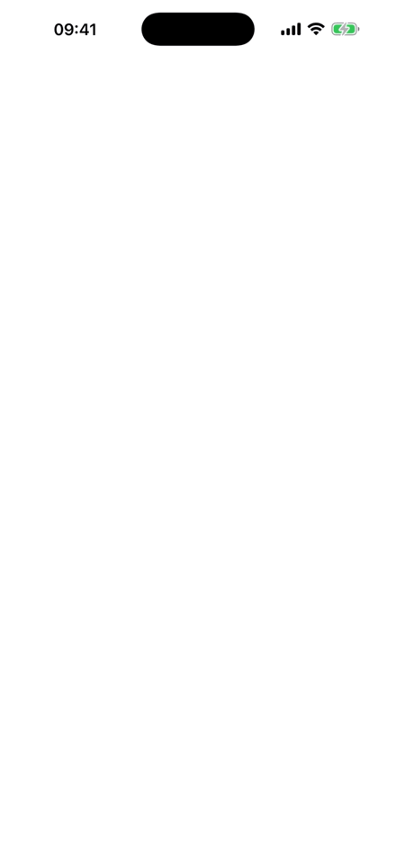

Download assets (icon, screenshots, GIF, logo - ZIP, 1.2 MB)
App Store: apps.apple.com/app/id6788079535
Press contact: Lucas Hesseldieck - oddone@earlsstudio.com
Copy-paste-ready texts. Do not edit ad hoc for individual outlets — if a text needs a variant, add it here so everything stays consistent.
> Odd One is a calm, minimalist puzzle game for iPhone and iPad. A grid of > symbols appears — one breaks a hidden rule of colour, shape, size or > count. Tap it. Four modes, soft piano music, completely free: no ads, no > tracking, no account.
> Odd One is built on a single idea: a grid of symbols, and one of them > doesn't belong. The hidden rule changes — sometimes it's colour, sometimes > shape, size or count — and finding the odd one out is the whole game. > > Four modes shape that idea into different moods. Classic offers 100 > handcrafted levels with no time pressure, growing from small grids to 5×5. > Arcade runs on a 60-second time bank where every solved puzzle buys more > time. Endless gives three lives, no clock, and three difficulty settings. > The Daily mode serves five puzzles that are identical for every player > worldwide, with solve time as the score and a streak to maintain. > > The game is deliberately quiet: soft piano music, a clean light and dark > interface, and a colour-blind assist mode. It supports five languages > (English, German, French, Italian, Spanish), Game Center leaderboards and > iCloud sync. > > Odd One is completely free. There are no ads, no tracking, no account and > no paywall. The only monetisation is an optional tip jar that unlocks > nothing — a thank-you, not a toll. > > Odd One is the first game from earls studio, a one-person studio founded > in Munich by Lucas Hesseldieck. He is not a trained developer: the game > was built in under a week alongside a day job, with intensive AI > assistance — and then polished detail by detail while waiting for App > Review.
| Name | Odd One (currently displayed as "OddOne" on the App Store) |
| Subtitle | Tap the odd one out! |
| Developer | earls studio (Lucas Hesseldieck), Munich, Germany |
| Platform | iPhone and iPad, iOS 17 or later |
| Release | July 19, 2026 — out now worldwide |
| Price | Free — no ads, no tracking, no account, no paywall; optional tip jar that unlocks nothing |
| Modes | Classic (100 levels), Arcade (60-second time bank), Endless (3 lives, 3 difficulties), Daily (5 puzzles, identical worldwide, streaks) |
| Languages | English, German, French, Italian, Spanish |
| Accessibility | Colour-blind assist, light and dark mode |
| Features | Game Center leaderboards, iCloud sync, calm piano soundtrack |
| Category / Rating | Games › Puzzle / Family, rated 4+ |
| App Store | https://apps.apple.com/app/id6788079535 |
| Press contact | Lucas Hesseldieck, oddone@earlsstudio.com |
| Website | https://earls-studio.github.io |
> earls studio is a one-person game studio from Munich, founded in 2026 by > Lucas Hesseldieck. It makes small, calm, carefully finished games — > free of ads and tracking. Odd One is its first release; a second game is > in development.
Copy-paste-fertige Texte. Bitte nicht pro Anfrage spontan umformulieren — wenn eine Variante gebraucht wird, hier ergänzen, damit alles konsistent bleibt.
Hinweis: Zum Launch heißt die App im deutschen App Store zunächst „Odd One" mit englischem Listing; der deutsche Store-Name „Odd One – Tipp den Ausreißer" folgt mit Update 1.0.1 (der Name „Odd One" ist im deutschen Store bereits vergeben). Die App selbst ist ab Tag 1 vollständig deutsch lokalisiert — das ist für deutsche Blogs der wichtige Punkt.
> Odd One ist ein ruhiges, minimalistisches Rätselspiel für iPhone und iPad. > Ein Raster aus Symbolen erscheint — eines bricht die versteckte Regel: > Farbe, Form, Größe oder Anzahl. Tipp es an. Vier Modi, sanfte Klaviermusik, > komplett kostenlos: keine Werbung, kein Tracking, kein Konto.
> Odd One baut auf einer einzigen Idee auf: ein Raster aus Symbolen, und > eines gehört nicht dazu. Die versteckte Regel wechselt — mal ist es die > Farbe, mal Form, Größe oder Anzahl — und den Ausreißer zu finden ist das > ganze Spiel. > > Vier Modi geben dieser Idee unterschiedliche Stimmungen. Klassisch bietet > 100 handgebaute Level ohne Zeitdruck, vom kleinen Raster bis 5×5. Arcade > läuft auf einer 60-Sekunden-Zeitbank, jedes gelöste Rätsel kauft Zeit > zurück. Endlos gibt drei Leben, keine Uhr und drei Schwierigkeitsgrade. > Der Tages-Modus stellt fünf Rätsel, die weltweit für alle Spieler identisch > sind — die Lösungszeit ist der Score, und wer täglich spielt, baut eine > Serie auf. > > Das Spiel ist bewusst leise: sanfte Klaviermusik, ein aufgeräumtes helles > und dunkles Interface und ein Farb-Assistent für Farbenblinde. Es > unterstützt fünf Sprachen (Deutsch, Englisch, Französisch, Italienisch, > Spanisch), Game-Center-Ranglisten und iCloud-Sync. > > Odd One ist komplett kostenlos. Keine Werbung, kein Tracking, kein Konto, > keine Bezahlschranke. Die einzige Finanzierung ist ein freiwilliges > Trinkgeld, das nichts freischaltet — ein Dankeschön, keine Maut. > > Odd One ist das erste Spiel von earls studio, einem Ein-Personen-Studio > aus München, gegründet von Lucas Hesseldieck. Er ist kein gelernter > Entwickler: Das Spiel entstand in weniger als einer Woche neben dem Beruf, > mit intensiver KI-Unterstützung — und wurde dann in der Wartezeit auf die > App-Prüfung Detail für Detail poliert.
| Name | Odd One (im Store derzeit als „OddOne" angezeigt; deutscher Store-Name „Odd One – Tipp den Ausreißer" folgt mit 1.0.1) |
| Untertitel | Tap the odd one out! |
| Entwickler | earls studio (Lucas Hesseldieck), München |
| Plattform | iPhone und iPad, ab iOS 17 |
| Release | 19. Juli 2026 — weltweit erhältlich |
| Preis | Kostenlos — keine Werbung, kein Tracking, kein Konto, keine Bezahlschranke; freiwilliges Trinkgeld, das nichts freischaltet |
| Modi | Klassisch (100 Level), Arcade (60-Sekunden-Zeitbank), Endlos (3 Leben, 3 Schwierigkeiten), Täglich (5 Rätsel, weltweit identisch, Serien-System) |
| Sprachen | Deutsch, Englisch, Französisch, Italienisch, Spanisch |
| Barrierefreiheit | Farb-Assistent für Farbenblinde, heller und dunkler Modus |
| Features | Game-Center-Ranglisten, iCloud-Sync, ruhige Klaviermusik |
| Kategorie / Altersfreigabe | Spiele › Rätsel / Familie, freigegeben ab 4 Jahren |
| App Store | https://apps.apple.com/app/id6788079535 |
| Presse-Kontakt | Lucas Hesseldieck, oddone@earlsstudio.com |
| Website | https://earls-studio.github.io |
> earls studio ist ein Ein-Personen-Spielestudio aus München, gegründet 2026 > von Lucas Hesseldieck. Es macht kleine, ruhige, sorgfältig fertiggestellte > Spiele — ohne Werbung und ohne Tracking. Odd One ist die erste > Veröffentlichung; ein zweites Spiel ist in Arbeit.